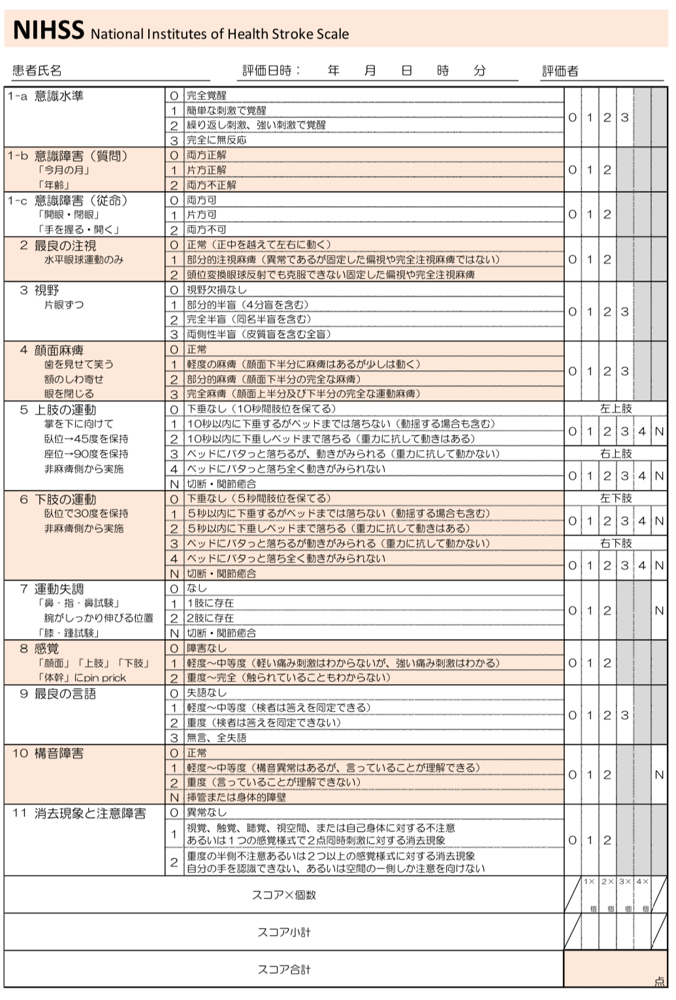

脳卒中s/oのとき，共同偏視・失語を確認．
病側と反対：脳卒中，同側：てんかん を考える．

✔️脳梗塞
MRIでは，DWI,FLAIR,T2*,MRA,(bpass)
アテローム・ラクナ梗塞→血管の問題→抗血小板薬（DAPT 初回アスピリン200mg, クロピドグレル300mg）
心原性脳塞栓症→血流の問題→抗凝固薬
細胞外液を持続点滴, エダラボン5日間（腎機能△では使用しない）
BNP>70のときpAFの可能性ありエコーとホルター心電図を．
皮質梗塞のときもAF塞栓を疑う
tPA適応：4.5h以内 or DWI+かつFLAIR-
✔️脳出血
アドナ50mg+トランサミン1Aを外液に混注
降圧：ニカルジピン25mg+生理食塩水20mL 2mLフラッシュ, 4mL/hで持続